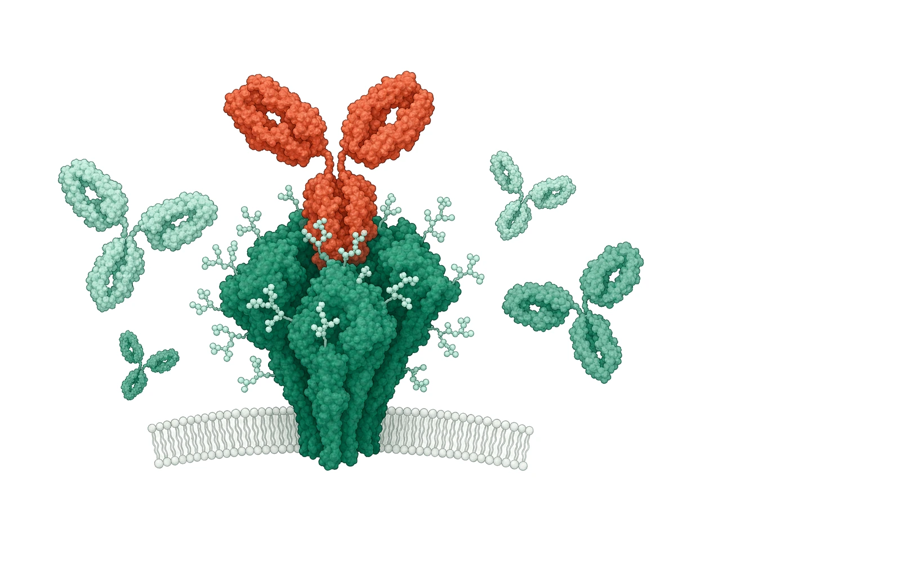
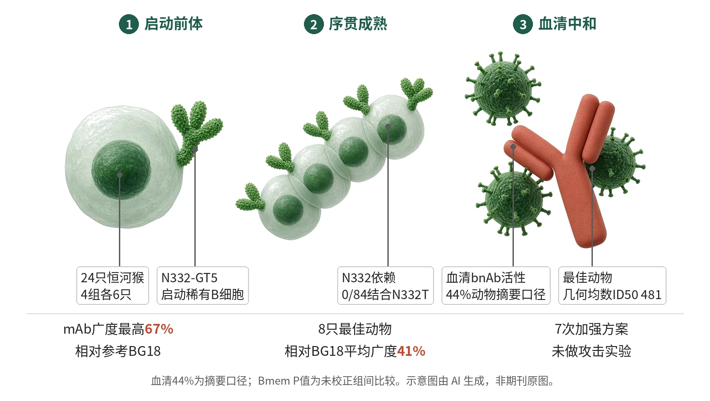

封面示意：深绿HIV Env三聚体，赤陶红bnAb结合V3聚糖区。图片由 AI 生成，非原文图片。
在接受完整异源序贯方案的恒河猴中，N332-GT5起始免疫后，按摘要口径有44%的动物出现血清bnAb活性。
主领域：疫苗与感染免疫 相关：抗体工程 / 动物模型 / HIV Env / 广谱中和抗体 / 生发系靶向 / 序贯免疫
关键数据卡
- 研究类型：开放标签非临床恒河猴免疫研究
- 样本量 n：24只恒河猴，4组各6只；第1组至boost 5，第2–4组至boost 7
- 对照：第1组同源N332-GT5加强对照；组间比较未按正式效能设计声明
- 干预/剂量：N332-GT5+SMNP递增剂量起始；第2–4组依次接受B46/B54/B50、B20、DU156、ABCG、ABCG、AMP、trimer–NP加强
- 随访：BG18-class BCR在第2–4组boost 6和boost 7后仍可检测；正文称超过2年
- 主要终点：原文未定义正式主要终点；重要/核心血清读出为boost 7后是否产生针对BG18敏感HIV伪病毒的血清bnAb活性，并用63个BG18敏感伪病毒面板量化广度和ID50
- 主要终点结果：摘要称血清bnAb活性出现在44%动物中；8只最佳动物boost 7后平均相对BG18广度41%，几何均数ID50范围52–481，总体几何均数ID50为107
- 统计量：Mann–Whitney U、Wilcoxon signed-rank/rank-sum；多重比较未校正；中和广度主要为描述性报告
- 证据等级：全文
- 核对记录：Europe PMC fullTextXML PMC13489963；核对章节：Abstract、Results、Methods、Figure legends、Discussion和Limitations

- N332-GT5启动稀有前体
- 异源Env逐步召回成熟
- WT与cocktail扩展识别
- boost 7 trimer–NP后观察血清bnAb
图示N332-GT5起始后，B46/B54/B50、B20、WT Env与cocktail逐步选择BG18-class B细胞；boost 7 trimer–NP后，部分动物出现血清bnAb活性，主要为V3糖基/Asn332依赖，血清证据为6/8动物下降。示意图由 AI 生成，依据原文结果绘制，非期刊原图，不代表分子比例
研究背景与待解问题
HIV Env三聚体在不同分离株间抗原变异很高，传统Env免疫难以从初始抗体库中启动bnAb前体。被动输入bnAb可在非人灵长类和人体提供保护，因此疫苗设计的关键，不只是诱导抗Env抗体，而是按预定表位启动稀有前体并推动亲和力成熟。
生发系靶向方案已在人I期试验中稳定诱导VRC01类前体，但成熟bnAb此前只在高许可性小鼠模型中由序贯免疫产生。Steichen等在Nature测试完整BG18类V3糖基表位序贯方案，目标是在内源恒河猴B细胞库中产生Bmem与血清bnAb。
研究设计
研究纳入24只按体重、年龄和性别匹配的恒河猴，分为4组、每组6只；研究者不盲法。全部动物先接受N332-GT5+SMNP递增剂量起始，N332-GT5总量100 µg、SMNP总量750 µg，分7次隔日给药。所有加强免疫为SMNP佐剂化蛋白推注，未声明按组间中和终点做效能设计。
第1组作为同源对照，N332-GT5一直加强至boost 5；第2、3、4组在boost 1分别用B46、B54或B50，随后共同接受B20、DU156、ABCG cocktail两次、AMP cocktail和trimer–NP cocktail至boost 7。核心B细胞读出用PBMC流式：表位特异Bmem定义为N332-GT5双阳性且表位敲除探针阴性。
核心结果
异源加强召回前体
boost 1后，第2–4组合并动物在第12周均有较高的boost结合表位特异Bmem，而第1组较低，组间P<0.0001。测序显示22只受检动物均可检出HCDR3至少20个氨基酸的BG18 type I BCR；第2–4组频率高于第1组，P=0.01。
走向野生型Env
boost 2后，第2–4组有10–20%的表位特异Bmem结合B20，而第1组约5%，P=0.015；BG18-class细胞中有30–100%结合B20，第1组为0，P<0.01。boost 3改用WT DU156后，第2–4组14/18动物出现WT Env结合BG18-class细胞，P=0.003。
成熟与糖基特异
多价Env进一步推动成熟。boost 5后，第2–4组12/18动物仍有BG18-class type I BCR；超过50%的这些BCR结合至少3种ABCG Env。重链SHM在boost 5后三个异源组中位均超过14%，最突变BCR接近30%。Asn332糖基对照显示，84个可结合含N332 BG505-MD39的type I抗体中，0/84可检测结合缺失N332糖基的N332T变体。
mAb中和广度
按摘要口径，bnAb谱系见于至少50%的动物，单个mAb相对参考BG18的中和广度最高67%。在63个BG18敏感伪病毒大面板上，13个type I mAb中位中和15个，几何均数IC50为1.4–10.8 µg ml−1，相对BG18广度最高57%；6个type III mAb中位中和26个，几何均数IC50为0.7–7.3 µg ml−1，单体相对BG18广度最高67%。
血清bnAb读出
血清层面，摘要称bnAb活性出现在44%的动物中。boost 7后，7/18动物中和哨兵tier 2伪病毒；8只最佳动物在63病毒面板中均有bnAb活性，8只动物的平均中和广度为相对BG18的41%；几何均数ID50范围52–481，总体几何均数ID50为107。最佳动物血清相对成熟BG18的广度为84%，约对应标准全球面板整体52%；其几何均数ID50为481，作者称预期可带来75–90%保护。
机制解读
原文实验证明：实验直接证明的链条从表位特异召回开始：异源boost 1使第2–4组BG18 type I Bmem和BGC获得boost结合能力，随后B20与WT DU156选择出能结合野生型Env的细胞。克隆树显示谱系跨多个时间点存在，且在6次序贯免疫中扩增并积累SHM。
结构与特异性证据支持“按设计表位成熟”。cryo-EM解析2个type I抗体和1个type III Fab，它们以接近人BG18的角度接近Env，HCDR3接触GDIR，并与Asn332糖基形成相互作用。N332T阴性对照和血清Asn332依赖性下降，说明主要中和指向V3糖基表位。
作者推测：作者推测，逐步减少生发系靶向突变的“shepherding”、尽早引入WT Env以及多分支cocktail“polishing”，共同把稀有BG18前体推向广谱中和。作者还推测trimer–NP在boost 7可能因更强亲合效应、B细胞激活和淋巴结运输而增强浆细胞反应；该环节未与可溶三聚体做正式同阶段效能对照。
局限与不确定
- 第一，外推性受限。实验对象是24只成年印度恒河猴，不是人体；虽作者指出该模型BG18前体频率低于人，但人类能否经同样序列获得44%血清bnAb活性仍未验证。
- 第二，方案负担很重。作者也指出，所测方案需要7次加强，未来应以更少免疫次数获得最广应答；boost 1到boost 2间隔34周因后勤原因形成。耐久性也未探索，boost 7后2至6周稳定不能说明长期维持。
- 第三，统计与方法限制需要保留。研究者不盲法，未声明按血清中和或保护终点做组间效能设计；统计上，图中pooled-test星号使用未校正P值，未做多重比较调整。最佳动物ID50 481对应75–90%保护是基于既往研究预期，本研究未进行HIV或SHIV攻击。
临床/产业意义
如果后续在人群中能以更少免疫次数复现这种从稀有前体到血清bnAb的路径，BG18类V3糖基表位将为HIV疫苗提供一个可操作的精密免疫模板。本文的价值在于把生发系靶向从“可启动前体”推进到非人灵长类中可检测血清bnAb活性。
产业转化仍取决于简化和制造形式。材料中提到可测试mRNA平台以支持规模化制造，并探索膜锚定三聚体递送；但本文只验证蛋白+SMNP及trimer–NP组合，尚不能判断哪一平台适合临床开发。
作者、出处与核对
Steichen JM, Madden PJ, Flynn CT, Phulera S, Shil M, Kalyuzhniy O, et al. Vaccination elicits HIV broadly neutralizing antibodies in primates. Nature. 2026. https://doi.org/10.1038/s41586-026-10837-5
证据等级：全文；核对记录：Europe PMC fullTextXML PMC13489963；核对章节：Abstract、Results、Methods、Figure legends、Discussion和Limitations